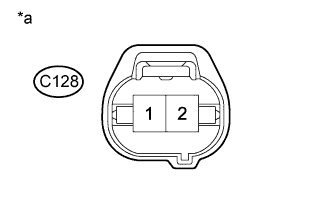

DTC P115D Низкий уровень сигнала в цепи системы изменения длины каналов впускного коллектора (ряд 2) |
DTC P115E Высокий уровень сигнала в цепи системы изменения длины каналов впускного коллектора (ряд 2) |
| Режим поездки при обнаружении DTC | Условие обнаружения DTC | Неисправный участок |
| Через 2 с после запуска двигателя повышайте частоту вращения коленчатого вала в течение 1 с | Обрыв в цепи электровакуумного клапана (для клапана регулирования всасывания № 2) в течение 0,5 с (логика диагностирования за 2 поездки). |
|
| Режим поездки при обнаружении DTC | Условие обнаружения DTC | Неисправный участок |
| Через 2 с после запуска двигателя повышайте частоту вращения коленчатого вала в течение 1 с | Короткое замыкание в цепи электровакуумного клапана (для клапана регулирования всасывания № 2) в течение 0,5 с (логика диагностирования за 2 поездки). |
|
| 1.ПРОВЕРЬТЕ ЭЛЕКТРОВАКУУМНЫЙ КЛАПАН ДЛЯ КЛАПАНА РЕГУЛИРОВАНИЯ ВСАСЫВАНИЯ № 2 (СОПРОТИВЛЕНИЕ) |
Проверьте электровакуумный клапан (для клапана регулирования всасывания № 2) (Нажмите здесь).
|
| ||||
| OK | |
| 2.ПРОВЕРЬТЕ ЭЛЕКТРОВАКУУМНЫЙ КЛАПАН (ДЛЯ КЛАПАНА РЕГУЛИРОВАНИЯ ВСАСЫВАНИЯ) (НАПРЯЖЕНИЕ ПИТАНИЯ) |
|  |
Отсоедините разъем электровакуумного клапана (для клапана регулирования всасывания № 2).
Измерьте напряжение в соответствии со значениями, приведенными в таблице.
| Контакты для подключения диагностического прибора | Положение переключателя | Заданные условия |
| C79-2 - масса | Зажигание включено (IG) | 11 - 14 В |
| *a | Вид спереди разъема со стороны жгута проводов: (к электровакуумному клапану (для клапана регулирования всасывания № 2)) |
|
| ||||
| OK | |
| 3.ПРОВЕРЬТЕ ЖГУТ ПРОВОДОВ И РАЗЪЕМ (ЭЛЕКТРОВАКУУМНЫЙ КЛАПАН (ДЛЯ КЛАПАНА РЕГУЛИРОВАНИЯ ВСАСЫВАНИЯ) – ECM) |
Отсоедините разъем электровакуумного клапана (для клапана регулирования всасывания № 2).
Отсоедините разъем ECM.
Измерьте сопротивление разъемов со стороны жгута проводов.
| Контакты для подключения диагностического прибора | Условие | Заданные условия |
| C79-1 - C93-3 (SCV2) | Всегда | Менее 1 Ом |
| Контакты для подключения диагностического прибора | Условие | Заданные условия |
| C79-1 или C93-3 (SCV2) - масса | Всегда | 10 кОм или более |
Подсоедините разъем электровакуумного клапана (для клапана регулирования всасывания № 2).
Подсоедините разъем ECM.
|
| ||||
| OK | |
| 4.ЗАМЕНИТЕ ECM |
Замените ECM (Нажмите здесь).
|
| ||||
| 5.ПРОВЕРЬТЕ ЖГУТ ПРОВОДОВ И РАЗЪЕМ (ЭЛЕКТРОВАКУУМНЫЙ КЛАПАН (ДЛЯ КЛАПАНА РЕГУЛИРОВАНИЯ ВСАСЫВАНИЯ № 2) – ИНТЕГРИРОВАННОЕ РЕЛЕ № 1) |
Извлеките интегрированное реле № 1 из блока реле моторного отсека.
Отсоедините разъем интегрированного реле № 1.
Отсоедините разъем электровакуумного клапана (для клапана регулирования всасывания № 2).
Измерьте сопротивление разъемов со стороны жгута проводов.
| Контакты для подключения диагностического прибора | Режим | Заданные условия |
| 1B-8 - C79-2 | Всегда | Менее 1 Ом |
| Контакты для подключения диагностического прибора | Режим | Заданные условия |
| 1B-8 или C79-2 - масса | Всегда | 10 кОм или более |
Установите интегрированное реле № 1.
Подсоедините разъем интегрированного реле № 1.
Подсоедините разъем электровакуумного клапана (для клапана регулирования всасывания № 2).
|
| ||||
| OK | |
| 6.ПРОВЕРЬТЕ ЦЕПЬ ПИТАНИЯ ECM |
Проверьте цепь питания ECM (Нажмите здесь)
|
| ||||
| 7.ЗАМЕНИТЕ ЭЛЕКТРОВАКУУМНЫЙ КЛАПАН (ДЛЯ КЛАПАНА РЕГУЛИРОВАНИЯ ВСАСЫВАНИЯ № 2) |
Замените электровакуумный клапан (для клапана регулирования всасывания № 2) (Нажмите здесь).
|
| ||||
| 8.ОТРЕМОНТИРУЙТЕ ИЛИ ЗАМЕНИТЕ ЖГУТ ПРОВОДОВ ИЛИ РАЗЪЕМ |
Отремонтируйте или замените жгут проводов или разъем.
| ДАЛЕЕ | |
| 9.ПРОВЕРЬТЕ, УСТРАНЕНА ЛИ ДОЛЖНЫМ ОБРАЗОМ НЕИСПРАВНОСТЬ |
Подсоедините портативный диагностический прибор к DLC3.
Удалите коды DTC (Нажмите здесь).
Запустите двигатель и дайте ему поработать не менее 3 с.
Войдите в следующие меню: Powertrain / Engine and ECT / DTC.
Убедитесь, что DTC не выводится снова.
| ДАЛЕЕ | ||
| ||